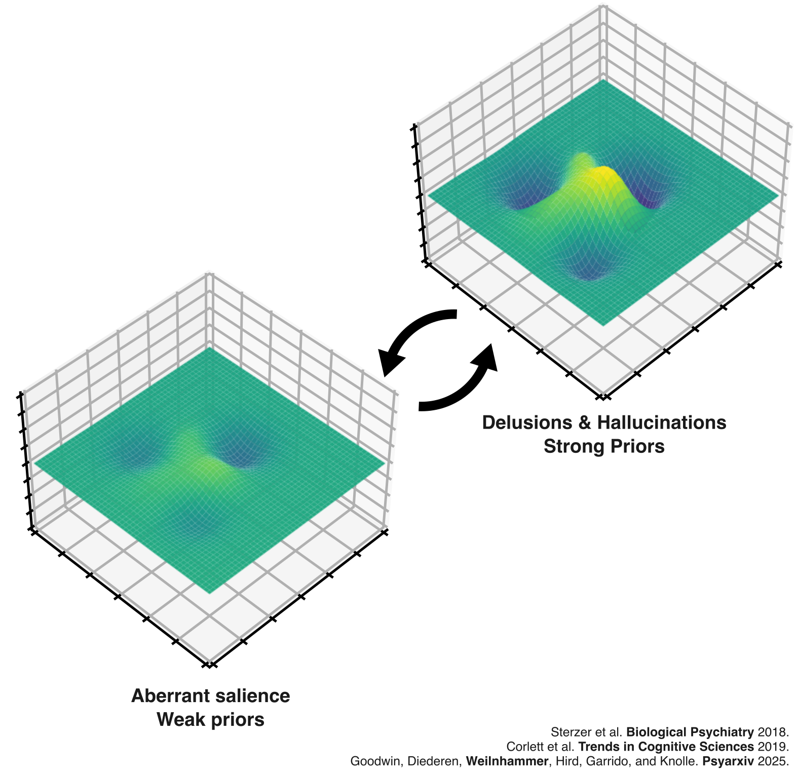
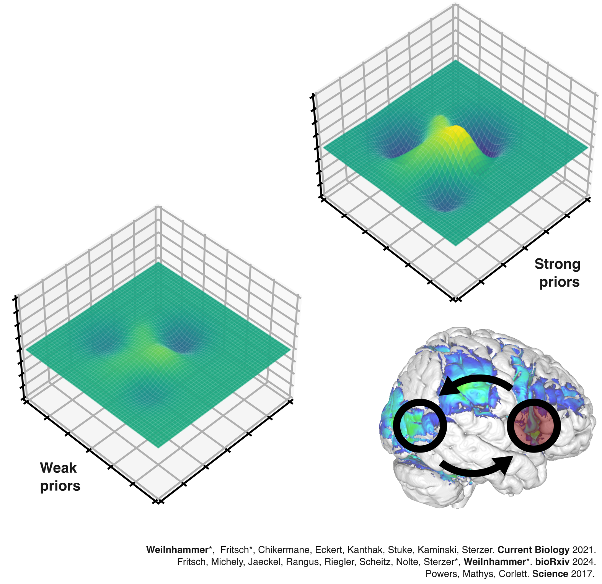
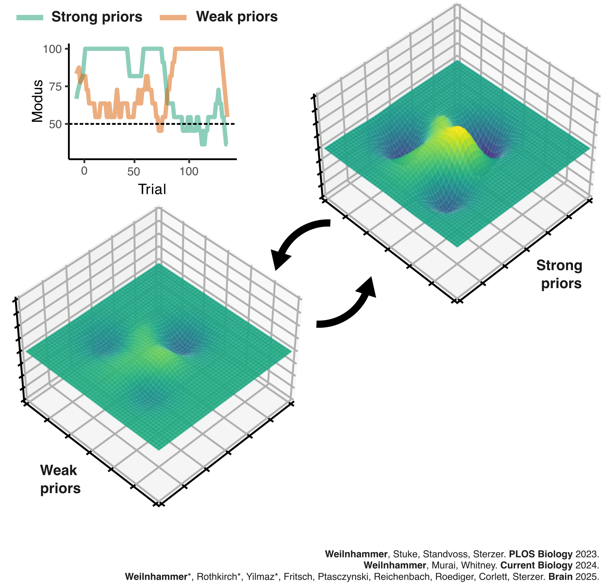
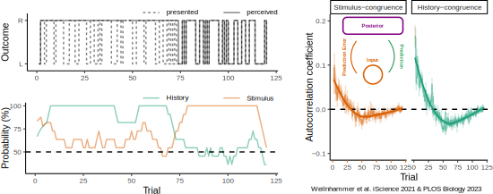
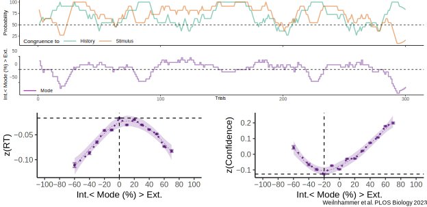
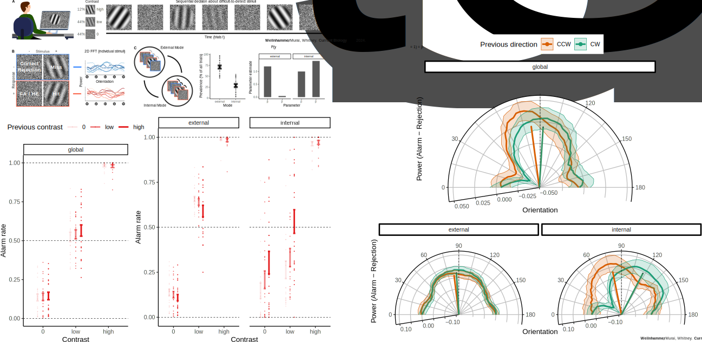

A map of subjective experience
PD Dr. med. Veith Weilnhammer
Helen Wills Neuroscience Institute & Berkeley Artificial Intelligence Research Center
University of California Berkeley


The geometry of mental health

Mrs. X

Mrs. X


It started with strange noises through the wall, quiet and barely recognizable, as if someone were eavesdropping.
Over time, I could make out the voice of my neighbor. I had to investigate.
At first, I only heard his voice in my apartment, but later he followed me to other places.
Then it dawned on me - he's an agent!
Dr. Y

Clinical representations

Clinical representations

Binary Diagnosis

Heterogeneity


Goal 1: A mechanistic understanding of subjective experience
Goal 2: New ways of measuring mental health
A mechanistic understanding of subjective experience

It started with strange noises through the wall, quiet and barely recognizable, as if someone were eavesdropping.
Over time, I could make out the voice of my neighbor. I had to investigate.
At first, I only heard his voice in my apartment, but later he followed me to other places.
Then it dawned on me - he's an agent!

It started with strange noises through the wall, quiet and barely recognizable, as if someone were eavesdropping.
Over time, I could make out the voice of my neighbor. I had to investigate.
At first, I only heard his voice in my apartment, but later he followed me to other places.
Then it dawned on me - he's an agent!


Schizophrenia
Sensory Ambiguity

Bistable perception

Bistable perception

Bistable perception

Bistable perception

Predictive processing

Case-control studies

Scz vs. controls

Model-based fMRI

Lesion studies
Predictive processing
fMRI + Lesions

fMRI + Lesions

fMRI + Lesions

fMRI + Lesions

fMRI + Lesions

Lesion studies
Hidden Markov Models
Graded Ambiguity

Serial Dependencies

- Stimulus- and history-congruence are autocorrelated.
Serial Dependencies

- Internally-biased processing suppresses stimulus sensitivity.
Perceptual Modes

- Are between-mode fluctuations a general phenomenon in perceptual decision-making?
Confidence Database

- 4500 humans, 22 million choices
Confidence Database

- Quadratic relationship to RTs and confidence
NMDAR hypofunction

Symptom tracking

Detection

- Behavioral experiment in 20 healthy human participants
- Serial detection of gabors of varying SNR
- High-contrast inducers at -10° and 10°
Summary
- False alarms are modulated by dynamic predictive templates.
- Alarms are more likely when the noise is compataible with the expected signal.
- Predictive templates are stronger in the internal mode.
Symptom tracking
Current projects
Computational models: Hallucinations and delusions in artificial minds
Clinical trajectories: Stages and progression in schizophrenia & NMDAR encephalitis
Content of psychosis: Idiosyncratic contents of hallucinations & delusions
Closed-loop neurotechnology: Real-time adversarial attacks & non-invasive brain stimulation
Goals: Multimodale dynamic representations of psychotic symptoms in humans and machines
Precision psychiatry
But ....
New ways of measuring mental health

Global average screen time: 6 hours and 34 minutes per day.
Digital movements are part of nearly all interactions with computers.
Passively collected data that can be gathered in real-time, with high precision, and at no significant cost.
Can digital movements predict mental health?

Open Source Software

- MILA: Machine learning framework for inferring latent mental states from digital activity
- SCRAMBLER: SeCure Randomization for Anonymous Movement in the Browser
Goals

- Public mental health
- Screening
- Monitoring
- Evaluation, Safety & Open Source
- Validation of digital phenotypes
- Ethical & data protection challenges
- Transparency and interpretability of AI-supported models
Outcome: Translational screening & monitoring of mental health
Thanks for your attention!

References (selection)
A Predictive Coding Account of Bistable Perception. PLOS Computational Biology 2017.
Psychotic Experiences in Schizophrenia and Sensitivity to Sensory Evidence. Schizophrenia Bulletin 2020.
An Active Role of Inferior Frontal Cortex in Conscious Experience. Current Biology 2021.
Sensory processing in humans and mice fluctuates between external and internal modes. PLOS Biology 2023.
Dynamic predictive templates in perception. Current Biology 2024.
N-Methyl-D-aspartate receptor hypofunction causes recurrent and transient failures of perceptual inference. Brain 2025.